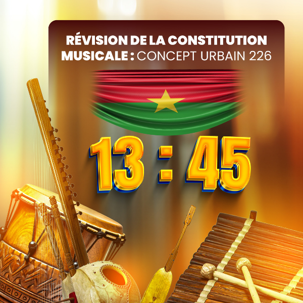

Objectifs du concept
- Créer une identité musicale unique : Mélanger des styles modernes (hip-hop, afrobeat, électro, trap) avec des instruments traditionnels (balafon, kora, ngoni, calebasse, tchema, percussions).
- Valoriser les artistes locaux : Offrir une plateforme où chanteurs, rappeurs, DJ et instrumentistes peuvent collaborer et se produire.
- Rapprocher la musique de son public
- Encourager l’improvisation Intégrer des performances interactives où le public peut participer en chantant, dansant ou jouant des instruments simples.
Impact du projet
- Social : Renforcer le lien entre les générations grâce à la fusion des traditions et de la modernité.
- Culturel : Promouvoir l’identité locale en l’intégrant dans un contexte urbain africain et mondial
- Économique : offrir une nouvelle niche pourvoyeuse d’emploi et de richesse.
Origine de l’appellation
Le Burkina Faso est constitué de 13 régions et de 45 provinces d’où le nom du concept global 13 : 45 Le nom du concept musical urbain choisi est le WAGALI qui signifie :- en Dioula l’art de faire voir, montrer ou exhiber
- en gourounsi (pur coïncidence) : les gens de ouaga
- en français : WAGALI « ouaga lie » comme pour dire « ouaga lie tout le monde à tout le monde ». Tout le monde à un lien direct ou indirect avec Ouaga
